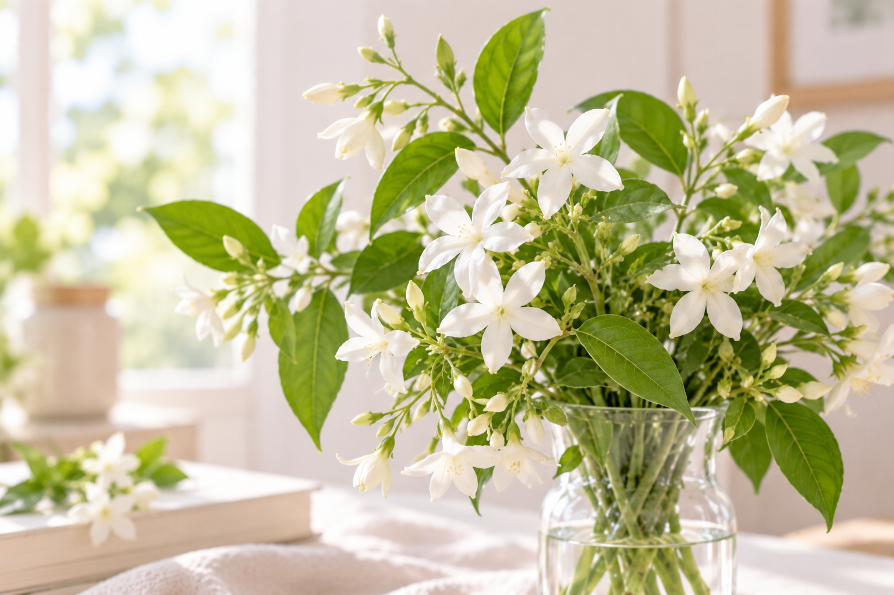
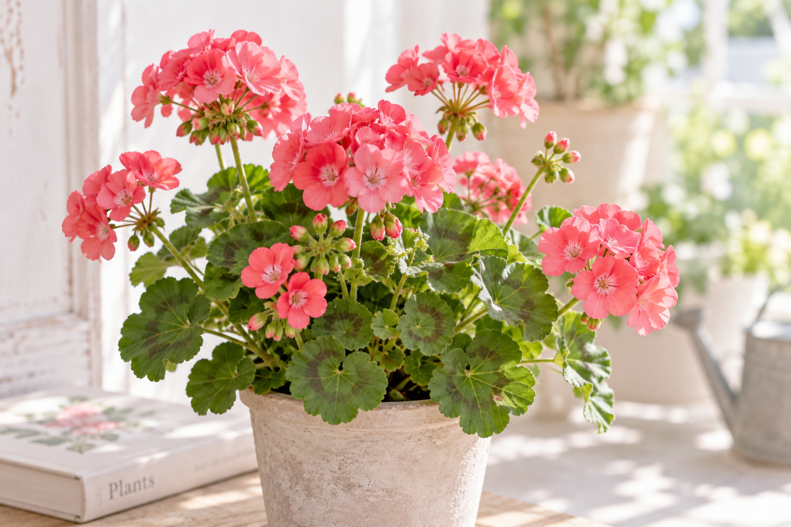

04 April
スイートピー
ひらひらと蝶が舞うような花びらと、ほのかに甘い香りが春の部屋をやさしく彩ります。
- 花言葉
- 門出・優しい思い出
- 香り
- 軽やかで甘い香り
- 飾る場所
- ダイニング・窓辺
- お手入れ
- 浅めの水で、こまめに水替えを
Our flowers
季節の移ろいを感じる花々を、一輪ずつ丁寧に選んでお届けします。
04 April
ひらひらと蝶が舞うような花びらと、ほのかに甘い香りが春の部屋をやさしく彩ります。

05 May
繊細な紫の穂と清らかな香り。風が通る場所に飾ると、自然な香りがふわりと広がります。

06 June
すっと伸びる姿と大ぶりな花が、雨の季節の室内に凛とした明るさを添えてくれます。

07 July
小さな白い花から広がるみずみずしい香り。涼やかなグリーンと合わせてお届けします。

08 August
丸みのある花と香り豊かな葉が魅力。夏の光に映える、軽やかなブーケに仕立てます。

09 September
端正に重なる花びらが印象的。秋の始まりに似合う、奥行きのある色合わせを楽しめます。
Care tips
茎の先を水の中で斜めに切り、新鮮な水を吸いやすくします。
花器を軽く洗い、涼しい季節も毎日水を替えるのがおすすめです。
直射日光や冷暖房の風を避け、明るく涼しい場所に飾りましょう。
Seasonal flowers
あなたにぴったりのプランから始めてみませんか。